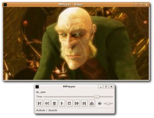
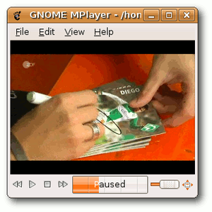

MPlayer
Dieser Artikel wurde für die folgenden Ubuntu-Versionen getestet:
Ubuntu 16.04 Xenial Xerus
Ubuntu 14.04 Trusty Tahr
Zum Verständnis dieses Artikels sind folgende Seiten hilfreich:
MPlayer  ist ein kommandozeilenbasierter Medienplayer. Er zeichnet sich durch die Unterstützung einer Vielzahl von Betriebssystemen und Medienformaten (Audio und Video) aus. Er eignet sich auch zur DVD-Wiedergabe oder für TV-Empfang. In Entwicklung ist Unterstützung für Blu-ray und HD-DVD. Hervorzuhebende Besonderheiten sind der Einsatz auf der Kommandozeile (ohne eine grafische Desktop-Oberfläche) und VDPAU im Zusammenspiel mit Grafikkarten von Nvidia (derzeit nur in aktuellen Entwicklerversionen).
ist ein kommandozeilenbasierter Medienplayer. Er zeichnet sich durch die Unterstützung einer Vielzahl von Betriebssystemen und Medienformaten (Audio und Video) aus. Er eignet sich auch zur DVD-Wiedergabe oder für TV-Empfang. In Entwicklung ist Unterstützung für Blu-ray und HD-DVD. Hervorzuhebende Besonderheiten sind der Einsatz auf der Kommandozeile (ohne eine grafische Desktop-Oberfläche) und VDPAU im Zusammenspiel mit Grafikkarten von Nvidia (derzeit nur in aktuellen Entwicklerversionen).
|  |
| GMPlayer |
Zusätzlich zum eigentlichen Abspielprogramm entwickelt das MPlayer-Team auch die desktop-unabhängige grafische Oberfläche GMPlayer und das Transkodierungsprogramm MEncoder. Für MPlayer gibt es eine Vielzahl alternativer grafischer Oberflächen . Die bekanntesten für Linux sind:
GNOME MPlayer (auch Xfce, LXDE, usw.)
KMPlayer (KDE)
SMPlayer (KDE)
Andere beliebte Medienplayer sind xine und VLC. mpv ist dagegen eine Abspaltung (Fork) von MPlayer und MPlayer2.
Installation¶
Folgende Pakete stehen zur Auswahl [1]:
mplayer (multiverse, MPlayer für die Bedienung nur per Kommandozeile)
mplayer-gui (multiverse, GMPlayer als zusätzliche grafische Benutzeroberfläche zu MPlayer)
 mit apturl
mit apturl
Paketliste zum Kopieren:
sudo apt-get install mplayer mplayer-gui
sudo aptitude install mplayer mplayer-gui
Optional können die folgenden Pakete installiert werden:
mplayer-fonts (multiverse - zusätzliche Schriftarten für Untertitel und das On-Screen-Display (OSD))
mplayer-skins (multiverse - zusätzliche Erscheinungsbilder für GMplayer)
gecko-mediaplayer (multiverse - eingebettete Multimedia-Wiedergabe in Mozilla-basierten Browsern, nur für 14.04)
mplayer-doc (multiverse - Dokumentation)
mit apturl
Paketliste zum Kopieren:
sudo apt-get install mplayer-fonts mplayer-skins gecko-mediaplayer mplayer-doc
sudo aptitude install mplayer-fonts mplayer-skins gecko-mediaplayer mplayer-doc
Kompilierung¶
MPlayer kann auch selbst aus dem Quelltext übersetzt werden, siehe MPlayer/Kompilieren.
Konfiguration¶
MPlayer verwendet zwei Konfigurationsdateien: ~/.mplayer/config und ~/.mplayer/gui.conf für die grafische Oberfläche GMPlayer.
Profile¶
Mit Profilen lässt sich der ansonsten unbequeme Umgang mit diversen Programmoptionen auf der Kommandozeile umgehen. Mehr Informationen sind der Manpage zu entnehmen.
Codecs¶
MPlayer kann sowohl bei der Übersetzung (Kompilieren) eingebundene als auch externe Codecs verwenden. Um unter Ubuntu unfreie Codecs zu verwenden bzw. zu installieren, bietet sich das folgende Metapaket an:
ubuntu-restricted-extras (multiverse)
mit apturl
Paketliste zum Kopieren:
sudo apt-get install ubuntu-restricted-extras
sudo aptitude install ubuntu-restricted-extras
Design¶
Die nicht für jeden Geschmack passende Standard-Oberfläche von GMplayer lässt sich mit Erscheinungsbildern (sog. Skins) ändern. Vorschaubilder und die Möglichkeit, Designs herunterzuladen, gibt es auf der Downloadseite von MPlayer. Dort findet sich auch eine Anleitung zum Installieren eines Designs.
Bedienung¶
Kommandozeile¶
MPlayer kann ohne grafische Oberfläche benutzt werden. Das gilt insbesondere beim Einsatz der Konsole. Mit dem Befehl
mplayer -vo fbdev /PFAD/ZUM/FILM
bzw:
mplayer -vo fbdev2 /PFAD/ZUM/FILM
wird ein Film gestartet. Wer das Programm dagegen in einem Terminal-Fenster [2] innerhalb einer grafischen Oberfläche starten möchte, nimmt den Befehl:
mplayer /PFAD/ZUM/FILM
Eine Liste der verfügbaren Ausgabetreiber kann man mit:
mplayer -vo help
ausgeben.
Möchte man die grafische Oberfläche GMPlayer nutzen, benutzt man statt mplayer den Befehl gmplayer (nicht mit GNOME MPlayer verwechseln).
DVD-Wiedergabe¶
Zur DVD-Wiedergabe sind zunächst einige Vorbereitungen zu treffen. Anschließend lassen sich DVDs mit:
mplayer dvd://
oder (neu, mit Menü über die Bibliothek libdvdread):
mplayer -nocache dvdnav://
wiedergeben. Alternativ lassen sich DVDs auch über die grafische Oberfläche öffnen.
Video- und Audiofilter¶
Eine der großen Stärken von Mplayer sind die zahlreichen Filter. Eine Ausgabe aller Videofilter erhält man per:
mplayer -vf help
Eine Ausgabe aller Audiofilter erhält man per:
mplayer -af help
Ein paar Beispiele:
Film deinterlacen:
mplayer -vf yadif
Film auf FullHD skalieren (notwendig z.B. wenn per
-vo fbdevauf einem FullHD-Monitor abgespielt wird, da Vollbild dort nicht unterstützt wird):mplayer -vf scale=1920,-2
Tonspuren langsamer oder schneller abspielen, ohne die Tonhöhe zu verändern:
mplayer -af scaletempo
Lautstärkeregelung per Software (normalerweise sorgt die Soundkarte und/oder der Soundserver dafür, eine höhere Lautstärke per Software zu erreichen) kann den Sound verzerren. Hier Verstärkung um 10dB:
mplayer -af volume=10
TV-Wiedergabe¶
DVB-T¶
Als erstes muss eine entsprechende ~/.mplayer/channels.conf erstellt werden. Eine ausführliche Anleitung zur Erstellung einer geeigneten channels.conf ist hier im Wiki vorhanden.
Hinweis:
Die channels.conf muss in der szap/tzap/czap/azap-Syntax sein, die scan per default erzeugt, w_scan aber nicht (die sich insbesondere auch von der VDR-Syntax unterscheidet).
Experten-Info:
Falls mehrere Tuner und/oder Karten vorhanden sind, können die Kanallisten in channels.conf.sat bzw. channels.conf.ter umbenannt werden. Zudem muss MPlayer die Karte im Aufruf mitgegeben werden. Die genaue Vorgehensweise steht in der MPlayer-Dokumentation 
Nun kann MPlayer das TV-Programm anzeigen. Ein Schnelltest erfolgt in einem Terminalfenster [2] mit:
mplayer dvb://
oder
mplayer dvb://SENDERNAME
wobei SENDERNAME exakt der Bezeichnung aus der ~/.mplayer/channels.conf entsprechen muss (Leerzeichen - falls vorhanden - maskieren!). Mit den Tasten
H und
K wird jeweils ein Programm vor- und zurückgeschaltet, mit
F zwischen Fenster- und Vollbildmodus.
Streaming¶
Mittels des Pakets gecko-mediaplayer lassen sich Multimedia-Inhalte eingebettet in Mozilla-basierten Browsern wiedergeben. Inwieweit das in der Praxis klappt, hängt aber von der Art der Multimedia-Inhalte und den installierten Codecs ab. Probleme treten häufiger auf, was aber nicht zwingend an MPlayer oder Ubuntu liegt, sondern an der Verwendung unfreier Software für diese Inhalte. Es kann auch bei gleichzeitiger Verwendung anderer Multimedia-Plugins für andere Player zu Problemen kommen. Siehe auch Streaming.
Online-TV oder Online-Radio¶
Um Internetradio abspielen zu können, muss erst das Paket totem-mozilla deinstalliert werden, danach werden die Pakete mplayer und mozilla-mplayer installiert. Nach einem Browser-Neustart sollte es funktionieren.
Tastenbefehle¶
| Grundlegende Tastenbefehle | |
| Taste | Funktion |
| Esc | Wiedergabe beenden |
| Wiedergabe pausieren | |
| → | 10 Sekunden vor springen |
| ← | 10 Sekunden zurück springen |
| ↑ | 1 Minute vor springen |
| ↓ | 1 Minute zurück springen |
| Bild ↑ | 10 Minuten vor springen |
| Bild ↓ | 10 Minuten zurück springen |
| 0 | Lautstärke erhöhen |
| 9 | Lautstärke verringern |
| M | Audioausgabe de- & aktivieren |
| F | Vollbildanzeige de- & aktivieren |
| # | Audiospur wechseln |
| J | Untertitel wechseln |
| O | On-Screen-Display wechseln |
Weitere Tasten erläutert die Manpage zu MPlayer.
Grafische Benutzeroberflächen¶
GNOME MPlayer¶
GNOME MPlayer ist eine einfache und übersichtliche Oberfläche für den MPlayer unter GNOME. Das Programm ist in den offiziellen Paketquellen enthalten. Es kann durch Auswahl von:

gnome-mplayer (multiverse)
mit apturl
Paketliste zum Kopieren:
sudo apt-get install gnome-mplayer
sudo aptitude install gnome-mplayer
installiert [1] werden. Nach der Installation befindet sich bei Ubuntu-Varianten mit einem Anwendungsmenü ein Programmstarter unter "Unterhaltungsmedien -> GNOME MPlayer".
GNOME MPlayer lässt sich auch zur Wiedergabe von Streaming-Videos aus dem Internet verwenden. Welche Einstellungen dazu vorgenommen werden müssen, wird auf der Homepage beschrieben. Zusätzlich lassen sich Analog- und Digital-TV (DVB) wiedergeben.
DVB-T¶
Hier kann über "Datei -> TV -> Open Digital TV" die TV-Wiedergabe gestartet werden, wobei immer mit dem ersten Eintrag aus ~/.mplayer/channels.conf begonnen wird. Wenn mit dem Befehl [2]:
cat ~/.mplayer/channels.conf | cut -d ":" -f 1 | sed 's/^/dvb:\/\//' > ~/dvb-t.pls
eine Liste der jeweils verfügbaren Sender erzeugt wurde, geht man über "Ansicht -> Wiedergabeliste" oder Strg + L und öffnet dort die mit dem obigen Befehl erzeugte Senderliste dvb-t.pls. Es kann aber auch einfach ~/.mplayer/channels.conf verwendet werden.
In Kombination mit "Bearbeiten -> Einstellungen -> Benutzeroberfläche" bzw. Strg + P und der Einstellung "place playlist below media" lässt so sich relativ komfortabel zwischen den Programmen umschalten.
KMPlayer¶
KMPlayer ist eine alternative Benutzeroberfläche für KDE. Neuere Programmversion (ab Ubuntu 9.04 Jaunty Jackalope) erfordern KDE SC 4. Das folgende Paket muss installiert [1] werden:
kmplayer (universe)
mit apturl
Paketliste zum Kopieren:
sudo apt-get install kmplayer
sudo aptitude install kmplayer
Nach der Installation befindet sich ein Starteintrag im Menü unter "Unterhaltungsmedien -> KMPlayer".
KMPlayer bietet über eine Lesezeichen-Funktion einen einfachen Zugriff auf gespeicherte Orte. Außerdem besitzt das Programm über das "Quellen"-Menü schnellen Zugriff auf verschiedene Quellen, wie etwa DVD, Audio-CD, TV oder VDR. Das Programm kann auch mittels MEncoder oder FFmpeg Videos aufzeichnen. Die dazu nötigen Einstellungen können über "Einstellungen -> KMPlayer einrichten" vorgenommen werden. KMPlayer kann auch in Konqueror eingebunden und für Streaming-Wiedergabe verwendet werden.
Für Fragen rund um das Programm gibt es ein kleines Anwenderforum .

SMPlayer¶
Der SMPlayer ist eine eigenständige Oberfläche (Frontend) für MPlayer zur Multimedia-Wiedergabe mit zusätzlichen Funktionen. Besonderheiten des SMPlayers sind u.a. die intuitive Bedienoberfläche und die gute Konfigurierbarkeit. Er ist besonders für Benutzer von KDE 4 geeignet. Details im Artikel SMPlayer.
Rosa Media Player¶
ROSA Media Player (ROMP) ist das zweitjüngste der hier vorgestellten Programme und der Standard-Videoplayer der Linux-Distribution ROSA . Die Anwendung ist nicht in den offiziellen Paketquellen enthalten, aber ein "Personal Package Archiv" (PPA) steht als Fremdquelle zur Verfügung. Siehe Install Rosa Media Player via PPA in Ubuntu .
Xt7-Player¶
Xt7-Player ist der Versuch, die zahlreichen Möglichkeiten von MPlayer mit einer zeitgemäßen grafischen Benutzeroberfläche zu versehen, die gleichzeitig auch noch bedienbar bleibt. Die Installation ist bei Ubuntu etwas anspruchsvoller, aber im Kombination mit einem PPA dennoch leicht möglich. Durch die Verwendung von Gambas und Qt desktop-unabhängig, integriert sich optisch am besten in KDE.
Links¶
MPlayer HQ
- offizielle Seite von MPlayerAusführliche Anleitung und Hintergrundinformationen zum MPlayer
auf SelfLinux.deVideoPlayer
 Programmübersicht
Programmübersicht
- Erstellt mit Inyoka
-
 2004 – 2017 ubuntuusers.de • Einige Rechte vorbehalten
2004 – 2017 ubuntuusers.de • Einige Rechte vorbehalten
Lizenz • Kontakt • Datenschutz • Impressum • Serverstatus -
Serverhousing gespendet von